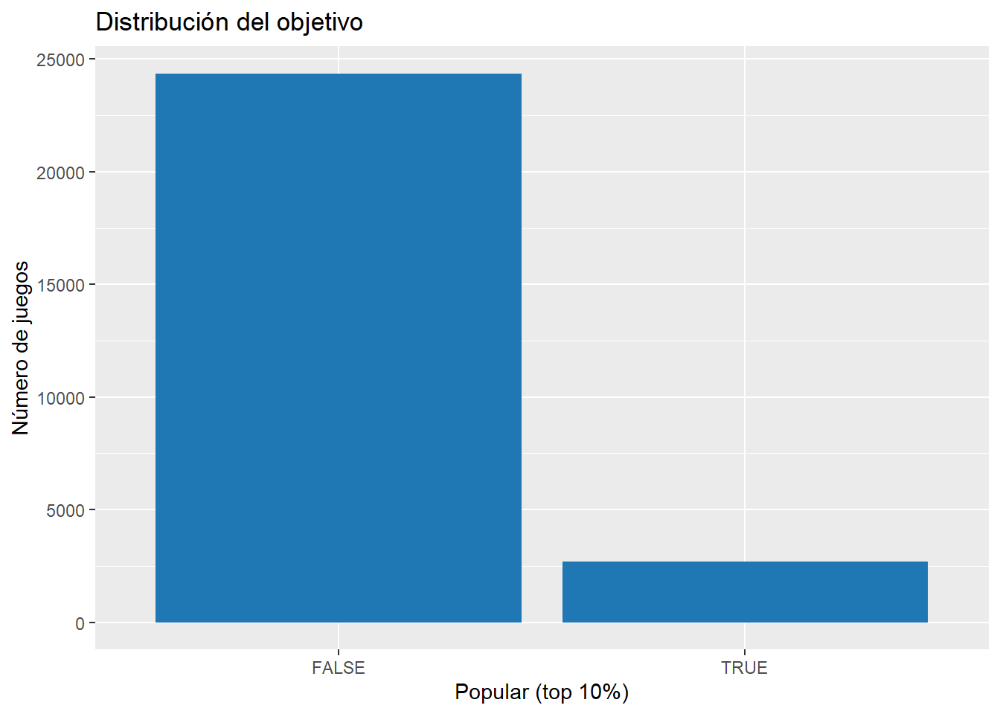
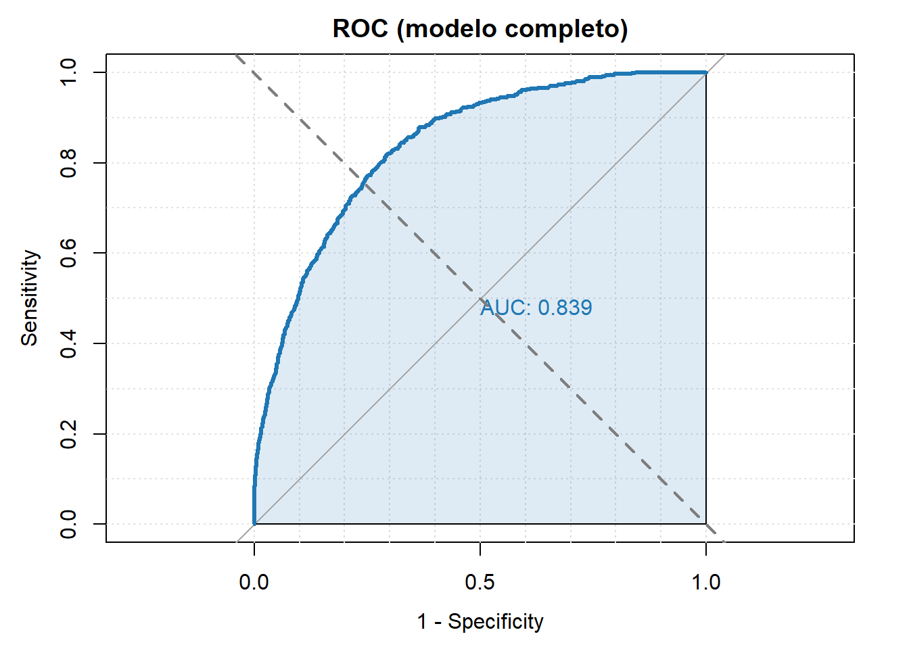

Mostrar código
prop.table(table(steam_model$popular))
FALSE TRUE
0.8999815 0.1000185 Se plantea una regresión logística para estimar la probabilidad de que un juego sea popular (variable binaria popular definida en la preparación) a partir de atributos de catálogo.
Nota metodológica (evitar leakage): popular se construye usando positive_ratings. Por tanto, no se utiliza positive_ratings ni derivadas directas como predictor.
Este capítulo responde a: “¿es posible predecir si un juego será altamente popular a partir de sus características?”. Dado que popular es top 10%, el problema es desbalanceado; por ello se complementa la exactitud con AUC y F1.
prop.table(table(steam_model$popular))
FALSE TRUE
0.8999815 0.1000185 ggplot(steam_model, aes(x = popular)) +
geom_bar(fill = "#1f77b4") +
labs(x = "Popular (top 10%)", y = "Número de juegos", title = "Distribución del objetivo")
set.seed(123)
n <- nrow(steam_model)
idx <- sample.int(n, size = floor(0.8 * n))
train <- steam_model[idx, ]
test <- steam_model[-idx, ]
# Centrado del año en entrenamiento
center_year <- mean(train$release_year, na.rm = TRUE)
train <- train %>% mutate(release_year_c = release_year - center_year)
test <- test %>% mutate(release_year_c = release_year - center_year)
c(n_train = nrow(train), n_test = nrow(test))n_train n_test
21660 5415 Se comparan dos especificaciones:
glm_simple <- glm(
popular ~ log_price + log_achievements + required_age + english + release_year_c,
data = train,
family = binomial()
)
glm_full <- glm(
popular ~ log_price + log_achievements + required_age + english + release_year_c +
windows + mac + linux + n_categories + n_genres + n_tags,
data = train,
family = binomial()
)
summary(glm_full)
Call:
glm(formula = popular ~ log_price + log_achievements + required_age +
english + release_year_c + windows + mac + linux + n_categories +
n_genres + n_tags, family = binomial(), data = train)
Coefficients:
Estimate Std. Error z value Pr(>|z|)
(Intercept) -28.127218 138.896783 -0.203 0.8395
log_price 0.357097 0.032454 11.003 < 2e-16 ***
log_achievements 0.171420 0.017817 9.621 < 2e-16 ***
required_age 0.114864 0.006888 16.676 < 2e-16 ***
english1 -0.312817 0.306093 -1.022 0.3068
release_year_c -0.362262 0.010510 -34.469 < 2e-16 ***
windowsTRUE 9.449147 138.864100 0.068 0.9457
macTRUE 0.329463 0.068745 4.793 1.65e-06 ***
linuxTRUE 0.150303 0.073956 2.032 0.0421 *
n_categories 0.228583 0.011274 20.274 < 2e-16 ***
n_genres 0.030959 0.021481 1.441 0.1495
n_tags 4.781922 0.999930 4.782 1.73e-06 ***
---
Signif. codes: 0 '***' 0.001 '**' 0.01 '*' 0.05 '.' 0.1 ' ' 1
(Dispersion parameter for binomial family taken to be 1)
Null deviance: 14144 on 21659 degrees of freedom
Residual deviance: 10521 on 21648 degrees of freedom
AIC: 10545
Number of Fisher Scoring iterations: 11gof <- data.frame(
modelo = c("simple", "completo"),
AIC = c(AIC(glm_simple), AIC(glm_full))
)
knitr::kable(gof, digits = 2)| modelo | AIC |
|---|---|
| simple | 11397.04 |
| completo | 10545.11 |
# Hosmer-Lemeshow
if (requireNamespace("ResourceSelection", quietly = TRUE)) {
hl <- ResourceSelection::hoslem.test(train$popular, fitted(glm_full), g = 10)
hl_tbl <- data.frame(
estadistico = unname(hl$statistic),
gl = unname(hl$parameter),
p_value = hl$p.value
)
knitr::kable(hl_tbl, digits = 5)
} else {
cat("Paquete 'ResourceSelection' no instalado: se omite Hosmer-Lemeshow.\n")
}| estadistico | gl | p_value |
|---|---|---|
| 6.92929 | 8 | 0.54428 |
El criterio AIC permite comparar modelos logísticos penalizando la complejidad: un valor menor indica un mejor equilibrio entre ajuste y parsimonia.
En este caso, el modelo completo presenta un AIC inferior al modelo simple (10545 frente a 11397), lo que sugiere que incorporar más variables explicativas mejora la capacidad del modelo para describir la probabilidad de que un juego sea popular.
Por otro lado, el test de Hosmer–Lemeshow evalúa si las probabilidades predichas se calibran adecuadamente con los datos observados. El resultado obtenido (p-value = 0.54) indica que no hay evidencia estadística de mal ajuste, por lo que el modelo completo presenta una calibración global razonable.
En conjunto, estos indicadores respaldan el uso del modelo completo como la especificación más adecuada para el análisis predictivo.
Se reportan odds ratios (OR): (=e^{}). Un OR > 1 indica aumento en las odds de ser popular manteniendo el resto constante.
# Odds Ratios (OR) e IC 95% a partir de los coeficientes (log-odds).
# Se fuerza el tipo numérico para evitar problemas de clase al exponenciar.
coefs_or <- broom::tidy(glm_full, conf.int = TRUE) |>
dplyr::mutate(
estimate = suppressWarnings(as.numeric(estimate)),
conf.low = suppressWarnings(as.numeric(conf.low)),
conf.high = suppressWarnings(as.numeric(conf.high))
) |>
dplyr::filter(term != "(Intercept)") |>
dplyr::transmute(
Variable = term,
OR = exp(estimate),
CI_95_inf = exp(conf.low),
CI_95_sup = exp(conf.high),
`p-valor` = p.value
) |>
dplyr::arrange(dplyr::desc(OR))
knitr::kable(
coefs_or, digits = 3,
caption = "Odds Ratios (OR) e intervalo de confianza del 95% (modelo logístico)"
)| Variable | OR | CI_95_inf | CI_95_sup | p-valor |
|---|---|---|---|---|
| windowsTRUE | 12697.331 | 2.168667e+59 | 1.074543e+70 | 0.946 |
| n_tags | 119.334 | 2.713800e+01 | 2.092348e+03 | 0.000 |
| log_price | 1.429 | 1.341000e+00 | 1.523000e+00 | 0.000 |
| macTRUE | 1.390 | 1.214000e+00 | 1.590000e+00 | 0.000 |
| n_categories | 1.257 | 1.229000e+00 | 1.285000e+00 | 0.000 |
| log_achievements | 1.187 | 1.146000e+00 | 1.229000e+00 | 0.000 |
| linuxTRUE | 1.162 | 1.005000e+00 | 1.344000e+00 | 0.042 |
| required_age | 1.122 | 1.107000e+00 | 1.137000e+00 | 0.000 |
| n_genres | 1.031 | 9.890000e-01 | 1.076000e+00 | 0.150 |
| english1 | 0.731 | 4.190000e-01 | 1.406000e+00 | 0.307 |
| release_year_c | 0.696 | 6.820000e-01 | 7.110000e-01 | 0.000 |
Los odds ratios (OR) permiten cuantificar el efecto de cada variable sobre la probabilidad de que un juego pertenezca al grupo de alta popularidad, manteniendo constantes el resto de factores.
En los resultados observamos que:
Número de tags (n_tags) presenta un OR muy elevado (> 100), lo que sugiere que los juegos con mayor riqueza descriptiva y categorización tienden a ser mucho más propensos a alcanzar popularidad.
Precio (log_price) tiene un OR > 1 (≈ 1.43), indicando que, dentro del rango observado, precios más altos se asocian con una mayor probabilidad de popularidad, posiblemente porque reflejan productos de mayor presupuesto o valor percibido.
Variables como mac o linux muestran efectos positivos moderados (OR entre 1.1 y 1.4), lo que podría interpretarse como una ventaja asociada a una mayor compatibilidad multiplataforma.
En cambio, la variable english no resulta significativa (p > 0.05), lo que indica que el idioma, en este dataset, no discrimina claramente entre juegos populares y no populares.
Estos resultados son coherentes con la lógica de negocio: la popularidad parece estar impulsada principalmente por factores de visibilidad, contenido y posicionamiento del producto más que por características técnicas menores.
Cabe destacar que algunas variables binarias como windowsTRUE presentan intervalos extremadamente amplios, lo que sugiere inestabilidad en la estimación debido a baja variabilidad o desequilibrio en la muestra. Por ello, su interpretación debe hacerse con cautela.
p_simple <- predict(glm_simple, newdata = test, type = "response")
p_full <- predict(glm_full, newdata = test, type = "response")
metrics <- rbind(
simple = c(
ACC = acc(test$popular, p_simple),
Precision = precision(test$popular, p_simple),
Recall = recall(test$popular, p_simple),
F1 = f1(test$popular, p_simple)
),
full = c(
ACC = acc(test$popular, p_full),
Precision = precision(test$popular, p_full),
Recall = recall(test$popular, p_full),
F1 = f1(test$popular, p_full)
)
)
# AUC
auc_s <- if (requireNamespace("pROC", quietly = TRUE)) {
as.numeric(pROC::auc(pROC::roc(test$popular, p_simple, quiet = TRUE)))
} else auc_manual(test$popular, p_simple)
auc_f <- if (requireNamespace("pROC", quietly = TRUE)) {
as.numeric(pROC::auc(pROC::roc(test$popular, p_full, quiet = TRUE)))
} else auc_manual(test$popular, p_full)
metrics <- cbind(metrics, AUC = c(simple = auc_s, full = auc_f))
knitr::kable(round(metrics, 4))| ACC | Precision | Recall | F1 | AUC | |
|---|---|---|---|---|---|
| simple | 0.9069 | 0.6017 | 0.1345 | 0.2198 | 0.7971 |
| full | 0.9104 | 0.6443 | 0.1818 | 0.2836 | 0.8393 |
Para evaluar la capacidad de generalización, se reportan métricas sobre el conjunto de test.
Los resultados muestran:
Sin embargo, el recall sigue siendo relativamente bajo (< 0.20), lo que implica que el modelo detecta solo una parte de los juegos realmente populares. Esto es consistente con el carácter minoritario de la clase positiva.
En términos de negocio, el modelo es útil como herramienta de priorización (ranking de probabilidad), aunque el umbral de decisión debería ajustarse según el coste de falsos negativos.
if (requireNamespace("pROC", quietly = TRUE)) {
roc_obj <- pROC::roc(test$popular, p_full, quiet = TRUE)
plot(
roc_obj,
main = "ROC (modelo completo)",
col = "#1f77b4", # azul
lwd = 3,
legacy.axes = TRUE, # ejes estándar: x=FPR, y=TPR
print.auc = TRUE, # muestra AUC
auc.polygon = TRUE,
auc.polygon.col = adjustcolor("#1f77b4", alpha.f = 0.15),
grid = TRUE
)
abline(a = 0, b = 1, lty = 2, col = "grey50", lwd = 2)
} else {
# ROC manual
ord <- order(p_full, decreasing = TRUE)
y <- test$popular[ord]
tpr <- cumsum(y) / sum(y)
fpr <- cumsum(!y) / sum(!y)
plot(c(0, fpr), c(0, tpr), type = "l", xlab = "FPR", ylab = "TPR", main = "ROC (modelo completo)")
abline(0, 1, lty = 2)
}
La curva ROC representa el compromiso entre sensibilidad y especificidad para todos los posibles umbrales de clasificación.
En este caso, la curva se sitúa claramente por encima de la diagonal aleatoria, lo que confirma que el modelo completo posee capacidad predictiva real.
El área bajo la curva (AUC ≈ 0.84) indica que, en promedio, el modelo asigna mayor probabilidad a un juego popular que a uno no popular en aproximadamente el 84% de las comparaciones.
Esto resulta relevante para el objetivo del proyecto: identificar qué características incrementan la probabilidad de éxito en términos de propietarios.
thr <- 0.5
yhat <- p_full >= thr
tab <- table(Real = test$popular, Pred = yhat)
knitr::kable(tab)| FALSE | TRUE | |
|---|---|---|
| FALSE | 4834 | 53 |
| TRUE | 432 | 96 |
La matriz de confusión permite observar el comportamiento del modelo bajo un umbral estándar de 0.5.
Se aprecia que:
Esto refleja que el umbral 0.5 no es óptimo en contextos desbalanceados, ya que el modelo tiende a favorecer la clase mayoritaria.
Desde un punto de vista de negocio, sería preferible ajustar el umbral para aumentar la detección de títulos con potencial de éxito, incluso a costa de incrementar algunos falsos positivos, dependiendo del objetivo estratégico (marketing, inversión o recomendación).
En este capítulo se ha formulado un modelo de regresión logística para estimar la probabilidad de que un juego sea “popular” (popular), definido de forma operativa como pertenecer al top 10% de valoraciones positivas dentro del dataset preparado. Esta definición permite convertir la pregunta de negocio “¿podemos anticipar qué juegos alcanzarán alta popularidad?” en un problema de clasificación reproducible y evaluable.
El modelo se ha interpretado mediante odds ratios (OR), lo que facilita una lectura aplicada: valores OR > 1 indican aumento de las odds de alta popularidad manteniendo el resto constante, mientras que OR < 1 indica disminución. La comparación entre un modelo simple y uno completo cuantifica el valor añadido de incorporar predictores adicionales (plataformas y metadatos agregados), y el AIC ofrece un criterio de ajuste que penaliza complejidad.
Dado el desbalance inherente a un objetivo “top 10%”, la evaluación no debe basarse únicamente en accuracy. Por ello se reportan métricas como AUC (ROC) y F1, que capturan mejor la capacidad discriminativa y el balance entre falsos positivos y falsos negativos.
En conjunto, la regresión logística complementa al modelo lineal: mientras el capítulo 6 aporta explicación e interpretación en un objetivo continuo, este capítulo aporta una herramienta predictiva para separar juegos con alta probabilidad de popularidad, cerrando el ciclo desde el planteamiento de preguntas de negocio hasta la modelización aplicada.